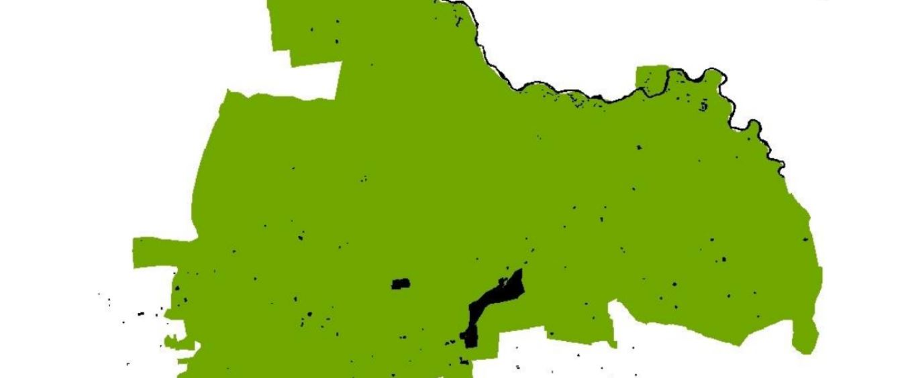
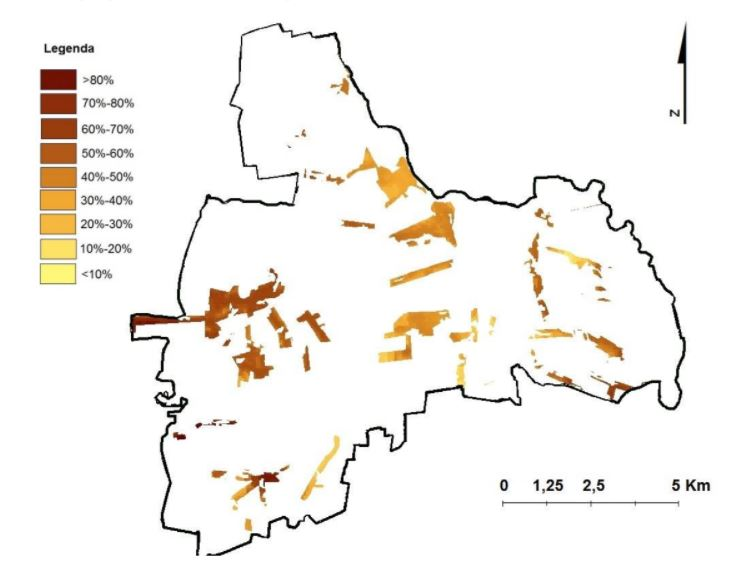

Multiple-criteria decision analysis for dwelling construction

Overview
This project was completed as a disseration, as a part of my undergraduate studies at Warsaw University of Technology. I used multiple-criteria decision analysis to determine which areas in Jadów commune in Poland are suitable to serve as a residential dwellings area. The work looked into the structure of land use, socio-demographic conditions, communication links and infrastructure as well as the condition of the natural environment within the study area. I identified areas with high environmental values and treated them as a barrier for new investment to protect the valueable greenery from building constructions. The map below shows the result of the analysis and identifies areas that are most suitable for new dwelling investement.
Data and methods
The aim of this project was to demarcate areas suitable for dwellings construction
in Jadów district as well as to single out the places that are the most likely to be beneficial
in context of such an investment. The process of research included the use of multi-criteria
evaluation in GIS environment. The analysis was based on number of appropriate criteria,
among which are those that take into account the economic factors, that indicate of area’s
attractiveness resulting from Jadów district’s characterization. Thecriteria have been divided into two
categories: constraints and factors.
Factors has been further subcategorized considering attractiveness for an investor and
for potential resident, evaluated with functional and environmental criteria in mind. Maps showing given criteria were first
subjects of normalization and then combined. Factors has been combined using weighted
linear combination method and constraints with Boolean method producing, as a result,
a final map.
Both maps has been merged, thus creating a map presenting the overall utility in context
of dwellings construction.
Maps showing distance from transport infrastructure, distance from commercial services and distance from schools respectively.
The final map showing areas for potential new residential dwellingd investement.
created with
Website Design Software .